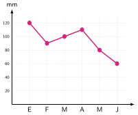
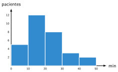

📝 Repaso de la unidad
Actividades de repaso
Escribe tu respuesta y después pulsa «Ver la solución» para corregirla tú. Los puntos dicen el nivel: ● básico, ●●● ampliación.
El Ayuntamiento de Astillero pregunta a 200 vecinos qué medio de transporte usan para ir a trabajar. Indica la población, la muestra, la variable y de qué tipo es.
Solución
Población: los vecinos de Astillero que trabajan. Muestra: 200 vecinos. Variable: medio de transporte (cualitativa).
¿Cómo te ha ido?
- número de goles en un partido
- tiempo en una carrera de 100 m
- marca del móvil
- temperatura a mediodía
Solución
a) discreta b) continua c) cualitativa d) continua
¿Cómo te ha ido?
- Tiempo diario en redes sociales.
- Número de seguidores.
- Red social favorita.
- Temperatura máxima diaria.
- Número de asignaturas suspensas.
- Grupo sanguíneo.
Solución
a) continua b) discreta c) cualitativa d) continua e) discreta f) cualitativa
¿Cómo te ha ido?
Indica en cada caso si conviene estudiar toda la población o una muestra, y por qué.
- La estatura media de los 300 alumnos de un instituto.
- La duración de las pilas que fabrica una empresa en un día (10 000 pilas).
- La intención de voto de los habitantes de un país.
Solución
a) Toda la población b) Una muestra c) Una muestra
¿Cómo te ha ido?
Una cadena de supermercados de Cantabria quiere conocer el gasto semanal en fruta de sus clientes y encuesta a 500 clientes elegidos al azar. Indica la población, la muestra, la variable y de qué tipo es.
Solución
Población: los clientes de la cadena. Muestra: 500 clientes. Variable: gasto semanal en fruta (cuantitativa continua).
¿Cómo te ha ido?
- Número de páginas de un libro.
- Color de un coche.
- Peso de una mochila.
- Número de mensajes enviados al día.
- Lugar de nacimiento.
- Duración de una canción.
Solución
a) discreta b) cualitativa c) continua d) discreta e) cualitativa f) continua
¿Cómo te ha ido?
Escribe una variable de cada tipo relacionada con tu centro: una cualitativa, una cuantitativa discreta y una cuantitativa continua.
Solución
Respuesta abierta. Por ejemplo: asignatura favorita; número de alumnos por clase; tiempo del recreo que se dedica a comer.
¿Cómo te ha ido?
Para un estudio sobre el desayuno en un colegio de 300 alumnos, se pregunta a 3 alumnos de cada una de sus 12 clases. ¿Cuál es la población? ¿Cuál es el tamaño de la muestra? ¿Qué porcentaje de la población representa la muestra?
Solución
Población: los 300 alumnos. Muestra: 36 alumnos, el 12%.
¿Cómo te ha ido?
Lee el texto y contesta.
Una semana antes de las elecciones, un periódico publica una encuesta hecha por teléfono a 1 200 personas mayores de edad, elegidas al azar en todo el país. Según la encuesta, el partido A obtendría el 34% de los votos y el partido B, el 31%. En la ficha técnica se indica que el margen de error es de \(\pm 3\) puntos. El titular del periódico dice: «El partido A ganará las elecciones».
- ¿Cuál es la población? ¿Y la muestra? ¿Por qué no se pregunta a toda la población?
- ¿Cuántas personas de la muestra dijeron que votarían al partido A?
- Teniendo en cuenta el margen de error, ¿entre qué valores puede estar el voto de cada partido?
- ¿Es correcto el titular? Justifícalo.
Solución
a) Población: los mayores de edad del país; muestra: 1 200 personas. b) 408 personas c) A: del 31% al 37%; B: del 28% al 34% d) No
¿Cómo te ha ido?
Indica si la muestra es representativa y justifícalo.
- Para conocer el deporte favorito de los jóvenes de Santander, se pregunta a la salida de un partido del Racing.
- Para conocer la estatura media de los alumnos de un colegio, se sortean 60 alumnos entre todos los cursos.
- Para conocer la opinión de los vecinos sobre un nuevo carril bici, se publica una encuesta en la web del Ayuntamiento y responde quien quiere.
Solución
a) No: está sesgada hacia el fútbol. b) Sí: es aleatoria y de todos los cursos. c) No: solo responden los más interesados en el tema.
¿Cómo te ha ido?
Indica si es verdadero o falso y justifícalo.
Marca V (verdadero) o F (falso). Después justifica tu respuesta.
Solución
a) Falso: es discreta. b) Falso: es cualitativa, sus números no miden una cantidad. c) Verdadero d) Falso
¿Cómo te ha ido?
Quieres saber cuántas horas de deporte a la semana practican los 600 alumnos de tu centro. Explica cómo elegirías una muestra de 60 alumnos para que sea representativa.
Solución
Respuesta abierta. Por ejemplo: sortear 60 alumnos de la lista del centro, o sortear en cada curso el 10% de sus alumnos.
¿Cómo te ha ido?
Un instituto tiene 240 alumnos en 1º de ESO, 210 en 2º, 180 en 3º y 170 en 4º. Se quiere elegir una muestra de 80 alumnos en la que cada curso tenga el mismo peso que en el instituto. ¿Cuántos alumnos hay que elegir de cada curso?
Solución
El 10% de cada curso: 24, 21, 18 y 17 alumnos.
¿Cómo te ha ido?
Para saber si los alumnos de su instituto desayunan bien, Marta pregunta a sus seis mejores amigos. Todos dicen que sí, y concluye: «El 100% de los alumnos del instituto desayuna bien». Explica los errores de su estudio.
Solución
La muestra es muy pequeña y no se ha elegido al azar: no es representativa.
¿Cómo te ha ido?
Lee el texto y contesta.
Un programa de radio pide a sus oyentes que llamen para opinar si debe prohibirse el móvil en los institutos. Llaman 850 personas y el 78% dice que sí. El locutor concluye: «La mayoría de los españoles quiere prohibir el móvil en los institutos».
- ¿Cuál es la población del estudio? ¿Y la muestra?
- ¿Cuántas personas contestaron que sí?
- ¿Es válida la conclusión del locutor? Justifícalo.
Solución
a) Población: los españoles; muestra: las 850 personas que llamaron. b) 663 c) No: la muestra no es aleatoria; solo llaman oyentes de ese programa con una opinión clara.
¿Cómo te ha ido?
Una misma característica se puede estudiar como variables de distinto tipo. Explica cómo, con estos ejemplos.
- La edad de una persona.
- El tiempo que dedicas a estudiar cada día.
Solución
a) En años cumplidos es discreta; medida con exactitud es continua; por grupos (niño, joven, adulto) es cualitativa. b) En minutos exactos es continua; como «poco, normal, mucho» es cualitativa.
¿Cómo te ha ido?
Número de hermanos de 20 alumnos: 0, 1, 1, 2, 0, 1, 3, 1, 2, 1, 0, 2, 1, 1, 4, 1, 2, 0, 1, 2.
Calcula las frecuencias absolutas, las absolutas acumuladas y las relativas.
Solución
\(f_i\): 4, 9, 5, 1, 1. \(F_i\): 4, 13, 18, 19, 20. \(h_i\): \(0{,}2\); \(0{,}45\); \(0{,}25\); \(0{,}05\); \(0{,}05\).
¿Cómo te ha ido?
Con los datos de la actividad anterior, calcula la media, la mediana y la moda.
Solución
Media: \(1{,}3\); mediana: 1; moda: 1.
¿Cómo te ha ido?
| \(x_i\) | \(f_i\) | \(F_i\) | \(h_i\) |
| 1 | 5 | 5 | |
| 2 | 15 | ||
| 3 | 8 | ||
| 4 | 2 |
Solución
\(f_2 = 10\). \(F_i\): 5, 15, 23, 25. \(h_i\): \(0{,}2\); \(0{,}4\); \(0{,}32\); \(0{,}08\).
¿Cómo te ha ido?
Color de pelo de 16 alumnos (C: castaño, R: rubio, M: moreno, P: pelirrojo):
Calcula las frecuencias absolutas, las relativas y los porcentajes.
Solución
\(f_i\): C 8, R 3, M 4, P 1. \(h_i\): \(0{,}5\); \(0{,}1875\); \(0{,}25\); \(0{,}0625\). %: 50; \(18{,}75\); 25; \(6{,}25\).
¿Cómo te ha ido?
Libros leídos el último verano por 25 alumnos:
Calcula \(f_i\), \(F_i\), \(h_i\) y los porcentajes.
Solución
\(f_i\): 4, 9, 7, 3, 1, 1. \(F_i\): 4, 13, 20, 23, 24, 25. \(h_i\): \(0{,}16\); \(0{,}36\); \(0{,}28\); \(0{,}12\); \(0{,}04\); \(0{,}04\). %: 16, 36, 28, 12, 4, 4.
¿Cómo te ha ido?
Halla la marca de clase de cada intervalo.
- \([10, 20)\)
- \([150, 160)\)
- \([1{,}5;\ 2)\)
- \([0, 25)\)
Solución
a) 15 b) 155 c) \(1{,}75\) d) \(12{,}5\)
¿Cómo te ha ido?
Estas son las notas de matemáticas de una clase:
Haz la tabla de frecuencias y calcula la media, la mediana y la moda.
Solución
\(f_i\): \(4 \to 1\), \(5 \to 4\), \(6 \to 4\), \(7 \to 6\), \(8 \to 2\), \(9 \to 2\), \(10 \to 1\). \(\bar{x} = 6,7\); \(Me = 7\); \(Mo = 7\).
¿Cómo te ha ido?
Con los datos de la actividad anterior, calcula los cuartiles y el rango, y dibuja el diagrama de caja.
Solución
\(Q_1 = 5,5\); \(Me = 7\); \(Q_3 = 7,5\); mínimo \(4\), máximo \(10\); rango \(6\).
¿Cómo te ha ido?
Minutos diarios de uso del móvil de 30 alumnos:
| Minutos | \([0, 30)\) | \([30, 60)\) | \([60, 90)\) | \([90, 120)\) |
| \(f_i\) | 4 | 9 | 12 | 5 |
Halla las marcas de clase, la media y el intervalo modal. Dibuja el histograma.
Solución
Marcas: \(15, 45, 75, 105\). \(\bar{x} = 63\) min. Intervalo modal: \([60, 90)\).
¿Cómo te ha ido?
Se ha preguntado a 30 alumnos cuántas horas duermen entre semana:
| Horas | \([5,6)\) | \([6,7)\) | \([7,8)\) | \([8,9)\) | \([9,10)\) |
| \(f_i\) | 3 | 7 | 12 | 6 | 2 |
Calcula la media con las marcas de clase e indica el intervalo modal. ¿Qué porcentaje duerme menos de 7 horas?
Solución
\(\bar{x}=7{,}4\) h. Intervalo modal: \([7,8)\). Menos de 7 horas: \(\approx 33\%\).
¿Cómo te ha ido?
Pesos de 40 recién nacidos en un hospital:
| Peso (kg) | Bebés |
| \([2;\ 2{,}5)\) | 3 |
| \([2{,}5;\ 3)\) | 8 |
| \([3;\ 3{,}5)\) | 15 |
| \([3{,}5;\ 4)\) | 10 |
| \([4;\ 4{,}5)\) | 4 |
Calcula el peso medio y el intervalo modal. ¿Qué porcentaje de bebés pesó menos de 3 kg?
Solución
Media: \(3{,}3\) kg. Intervalo modal: \([3;\ 3{,}5)\). Menos de 3 kg: \(27{,}5\)%.
¿Cómo te ha ido?
Estaturas, en cm, de 20 alumnos:
Agrúpalas en los intervalos \([145, 155)\), \([155, 165)\), \([165, 175)\) y \([175, 185)\), y haz la tabla con \(f_i\), \(F_i\) y porcentajes.
Solución
\(f_i\): 4, 8, 7, 1. \(F_i\): 4, 12, 19, 20. %: 20, 40, 35, 5.
¿Cómo te ha ido?
En una encuesta a 200 familias sobre el número de mascotas, el 35% no tiene ninguna, el 40% tiene una, el 20% tiene dos y el resto tiene tres. Haz la tabla de frecuencias absolutas y absolutas acumuladas. ¿Cuántas familias tienen como mucho una mascota?
Solución
\(f_i\): 70, 80, 40, 10. \(F_i\): 70, 150, 190, 200. 150 familias.
¿Cómo te ha ido?
| \(x_i\) | \(f_i\) | \(h_i\) |
| 0 | 6 | \(0{,}2\) |
| 1 | \(a\) | \(0{,}4\) |
| 2 | 9 | |
| 3 | \(b\) |
Halla el número total de datos, \(a\), \(b\) y las frecuencias relativas que faltan.
Solución
\(N = 30\); \(a = 12\); \(b = 3\). \(h_i\): \(0{,}3\) y \(0{,}1\).
¿Cómo te ha ido?
En una tabla de 50 datos agrupados en los intervalos \([0, 10)\), \([10, 20)\), \([20, 30)\), \([30, 40)\) y \([40, 50)\), las frecuencias absolutas acumuladas son 6, 17, 35, 46 y 50. Halla las frecuencias absolutas. ¿Qué porcentaje de los datos es menor que 30?
Solución
\(f_i\): 6, 11, 18, 11, 4. Menores que 30: el 70%.
¿Cómo te ha ido?
Contesta y justifica tu respuesta.
- ¿Cuánto suman todas las frecuencias relativas de una tabla?
- ¿Puede una frecuencia absoluta acumulada ser menor que la anterior?
- ¿Puede una frecuencia relativa valer \(1{,}2\)?
Solución
a) 1 b) No: se suman frecuencias positivas. c) No: está entre 0 y 1.
¿Cómo te ha ido?
Lee el texto y contesta.
Un centro de salud de Torrelavega atendió en enero a 1 250 pacientes: 450 por gripe, 300 por catarro, 250 para revisiones y el resto por otros motivos.
- Haz la tabla con las frecuencias absolutas, relativas y porcentajes.
- ¿Qué porcentaje de pacientes no acudió ni por gripe ni por catarro?
- En febrero se atendió a 1 000 pacientes con los mismos porcentajes. ¿Cuántos fueron por gripe?
Solución
a) \(f_i\): 450, 300, 250, 250. \(h_i\): \(0{,}36\); \(0{,}24\); \(0{,}2\); \(0{,}2\). %: 36, 24, 20, 20. b) El 40% c) 360
¿Cómo te ha ido?
¿Qué gráfico usarías en cada caso?
- El porcentaje de votos de cada candidatura al consejo escolar.
- Las estaturas de los alumnos de 3º, agrupadas en intervalos.
- La evolución de la temperatura media en Cantabria durante un año.
Solución
a) sectores b) histograma c) gráfico de líneas
¿Cómo te ha ido?
Goles marcados en los partidos de una liga escolar:
- ¿Cuántos partidos se jugaron?
- ¿En cuántos partidos se marcaron más de 2 goles?
- ¿Qué porcentaje de partidos acabó sin goles?
Solución
a) 20 b) 5 c) El 20%
¿Cómo te ha ido?
¿Qué gráfico usarías en cada caso?
- El número de hermanos de los alumnos de una clase.
- El peso de los recién nacidos en un hospital, agrupado en intervalos.
- El reparto del presupuesto municipal entre las distintas partidas.
- El número de visitantes de un museo cada mes durante dos años.
Solución
a) barras b) histograma c) sectores d) gráfico de líneas
¿Cómo te ha ido?
¿Qué ángulo tiene en un diagrama de sectores un valor con cada frecuencia relativa?
- \(h_i = 0{,}25\)
- \(h_i = 0{,}1\)
- \(h_i = 0{,}05\)
- \(h_i = 0{,}5\)
Solución
a) \(90^\circ\) b) \(36^\circ\) c) \(18^\circ\) d) \(180^\circ\)
¿Cómo te ha ido?
Número de televisores en casa de 25 alumnos:
| Televisores | 0 | 1 | 2 | 3 | 4 |
| \(f_i\) | 1 | 8 | 10 | 5 | 1 |
Dibuja el diagrama de barras.
Solución
Respuesta gráfica: barras de alturas 1, 8, 10, 5 y 1.
¿Cómo te ha ido?
En una clase de 30 alumnos, el deporte favorito es el fútbol para 12, el baloncesto para 8, la natación para 4 y otros deportes para 6. Calcula los ángulos de un diagrama de sectores y dibújalo.
Solución
\(144^\circ\), \(96^\circ\), \(48^\circ\) y \(72^\circ\).
¿Cómo te ha ido?
Una familia gasta al mes 2 400 €: 720 € en vivienda, 600 € en alimentación, 360 € en transporte, 240 € en ocio y ahorra 480 €. Calcula los grados de cada sector para hacer un diagrama de sectores.
Solución
Vivienda: 108º; alimentación: 90º; transporte: 54º; ocio: 36º; ahorro: 72º.
¿Cómo te ha ido?
Un anuncio dice que las ventas de un refresco se han duplicado y lo muestra con dos botellas: la segunda es el doble de alta y el doble de ancha que la primera. ¿Por qué es engañoso el gráfico?
Solución
La segunda botella ocupa 4 veces más superficie.
¿Cómo te ha ido?
En un diagrama de sectores sobre cómo llegan al centro 240 alumnos, el sector «andando» mide \(120^\circ\), «autobús» \(150^\circ\), «coche» \(60^\circ\) y «bicicleta» el resto. ¿Cuántos alumnos usan cada medio?
Solución
Andando 80, autobús 100, coche 40 y bicicleta 20.
¿Cómo te ha ido?
Edad de los socios de un club:
| Edad | \([10, 20)\) | \([20, 30)\) | \([30, 40)\) | \([40, 50)\) | \([50, 60)\) |
| \(f_i\) | 8 | 14 | 10 | 6 | 2 |
Dibuja el histograma y el polígono de frecuencias.
Solución
Respuesta gráfica: rectángulos de alturas 8, 14, 10, 6 y 2; el polígono une \((15, 8)\), \((25, 14)\), \((35, 10)\), \((45, 6)\) y \((55, 2)\).
¿Cómo te ha ido?
Lluvia caída en una estación meteorológica de Cantabria durante el primer semestre:

- ¿Qué mes fue el más lluvioso? ¿Y el más seco?
- ¿En qué meses llovió menos que el mes anterior?
- ¿Cuál fue la lluvia media mensual?
Solución
a) Enero; junio. b) Febrero, mayo y junio. c) \(93{,}3\) mm
¿Cómo te ha ido?
Tiempo de espera en la consulta de un centro de salud:

- ¿A cuántos pacientes se ha preguntado?
- ¿Cuántos esperaron 20 minutos o más?
- ¿Qué porcentaje esperó menos de 10 minutos?
Solución
a) 30 b) 13 c) \(\approx 16{,}7\%\)
¿Cómo te ha ido?
Deporte favorito de 20 alumnos: fútbol 10, baloncesto 5, balonmano 3 y otros 2. Introduce la tabla en una hoja de cálculo y crea un diagrama de barras y uno de sectores. ¿En cuál se ve mejor que el fútbol es el favorito de la mitad de la clase?
Solución
En el de sectores: el fútbol ocupa medio círculo (\(180^\circ\)).
¿Cómo te ha ido?
En un diagrama de sectores con 60 datos, el valor A tiene 15 datos, el sector de B mide \(120^\circ\), C es el 25% de los datos y D es el resto. Calcula la frecuencia y el ángulo de cada valor.
Solución
A: 15 datos, \(90^\circ\). B: 20, \(120^\circ\). C: 15, \(90^\circ\). D: 10, \(60^\circ\).
¿Cómo te ha ido?
- ¿Por qué no tiene sentido un diagrama de sectores para mostrar la evolución de la temperatura a lo largo de un día?
- ¿Por qué no se usa un histograma para el color de ojos?
Solución
a) Los sectores muestran partes de un total, no una evolución. b) Es una variable cualitativa: no hay intervalos; se usan barras o sectores.
¿Cómo te ha ido?
Dos periódicos publican el paro de un municipio: un 8% en 2024 y un 6% en 2025. Los dos usan un diagrama de barras, pero el eje vertical del primero empieza en 0 y el del segundo, en el 5%. ¿Cuántas veces más alta parece la barra de 2024 en cada gráfico? ¿Cuál exagera la bajada del paro?
Solución
En el primero, \(\approx 1{,}33\) veces; en el segundo, 3 veces. El segundo exagera la bajada.
¿Cómo te ha ido?
Halla la media, la mediana, la moda y el rango.
- \(12, 15, 11, 15, 18, 13, 14\)
- \(3, 7, 2, 9, 4, 5\)
Solución
a) \(\bar{x}=14\); \(Me=14\); \(Mo=15\); rango 7 b) \(\bar{x}=5\); \(Me=4{,}5\); no hay moda; rango 7
¿Cómo te ha ido?
Halla la media, la mediana y la moda.
- \(8, 3, 5, 3, 6\)
- \(10, 12, 12, 15, 16, 18, 12, 9\)
- \(1, 2, 2, 3, 3, 4\)
Solución
a) \(\bar{x}=5\); \(Me=5\); \(Mo=3\) b) \(\bar{x}=13\); \(Me=12\); \(Mo=12\) c) \(\bar{x}=2{,}5\); \(Me=2{,}5\); \(Mo=2\) y \(3\)
¿Cómo te ha ido?
Halla la media, la mediana y la moda de la tabla.
| \(x_i\) | 1 | 2 | 3 | 4 | 5 |
| \(f_i\) | 2 | 5 | 8 | 3 | 2 |
Solución
\(\bar{x} = \frac{58}{20} = 2{,}9\); \(Me = 3\); \(Mo = 3\).
¿Cómo te ha ido?
Edades de los jugadores de un equipo de fútbol sala: \(\; 14, 15, 14, 16, 15, 14, 15, 15, 14, 16\). Halla la media, la mediana y la moda.
Solución
\(\bar{x} = 14{,}8\) años; \(Me = 15\); \(Mo = 14\) y \(15\).
¿Cómo te ha ido?
Laura ha sacado 6, 8, 5 y 7 en los cuatro primeros exámenes. ¿Qué nota necesita en el quinto para que su media sea un 7?
Solución
\(5 \cdot 7 - 26 = 9\).
¿Cómo te ha ido?
Para hallar la mediana de \(7, 3, 9, 4, 5, 8\), Nora toma los dos datos centrales de la lista: \(\frac{9+4}{2}=6{,}5\). Explica el error y calcula la mediana.
Solución
\(Me=6\)
¿Cómo te ha ido?
Copia estas notas en una hoja de cálculo: 6, 8, 5, 7, 9, 4, 7, 8, 6, 10. Calcula la media con PROMEDIO, la mediana con MEDIANA, la desviación típica con DESVEST.P y el coeficiente de variación.
Solución
\(\bar{x}=7\); \(Me=7\); \(\sigma=\sqrt{3}\approx 1{,}73\); \(CV\approx 0{,}25\) (25%).
¿Cómo te ha ido?
La media de cinco números es 12. Al añadir un sexto número, la media pasa a ser 13. ¿Qué número se ha añadido?
Solución
El 18.
¿Cómo te ha ido?
La media de los cuatro primeros exámenes de Hugo es \(6{,}5\). Si en el quinto saca un 9, ¿cuál será su media?
Solución
\(\frac{26 + 9}{5} = 7\).
¿Cómo te ha ido?
Tiempo que tardan 24 alumnos en llegar al colegio:
| Minutos | \([0, 10)\) | \([10, 20)\) | \([20, 30)\) | \([30, 40)\) |
| \(f_i\) | 6 | 10 | 5 | 3 |
Calcula la media con las marcas de clase e indica el intervalo modal.
Solución
\(\bar{x} = \frac{410}{24} \approx 17{,}1\) min. Intervalo modal: \([10, 20)\).
¿Cómo te ha ido?
¿Qué medida de centralización es la más adecuada en cada caso?
- La talla de camiseta que más se vende en una tienda.
- El precio habitual de las viviendas de una zona donde hay algunas mansiones.
- La nota final de un alumno a partir de sus exámenes.
Solución
a) moda b) mediana c) media
¿Cómo te ha ido?
Para calcular la media de esta tabla, Iker hace \(\frac{2 + 3 + 4}{3} = 3\). Explica el error y calcula la media.
| \(x_i\) | 2 | 3 | 4 |
| \(f_i\) | 2 | 3 | 15 |
Solución
No tiene en cuenta las frecuencias: \(\bar{x} = \frac{73}{20} = 3{,}65\).
¿Cómo te ha ido?
En una pequeña empresa cinco empleados cobran \(1\,200\), \(1\,250\), \(1\,300\), \(1\,350\) y \(1\,400\) €, y el dueño cobra \(6\,000\) €. Calcula la media y la mediana del sueldo con y sin el dueño. ¿Qué medida representa mejor el sueldo habitual?
Solución
Sin el dueño: media y mediana, \(1\,300\) €. Con el dueño: media \(\approx 2\,083\) €; mediana, \(1\,325\) €. La mediana.
¿Cómo te ha ido?
Busca cinco números naturales cuya media sea 10, su mediana 8 y su moda 7.
Solución
Respuesta abierta. Por ejemplo: 7, 7, 8, 13 y 15.
¿Cómo te ha ido?
En un examen, el grupo A (20 alumnos) ha sacado una media de 6 y el grupo B (30 alumnos), una media de 8. Dani dice que la media de los 50 alumnos es 7. ¿Tiene razón?
Solución
No: la media es \(7{,}2\).
¿Cómo te ha ido?
La media de las edades de tres hermanos es 12 años y la mediana, 11 años. Si el mayor tiene 16 años, ¿qué edad tienen los otros dos?
Solución
9 y 11 años.
¿Cómo te ha ido?
- Si a un conjunto de datos se le añade un dato igual a la media, ¿cambia la media?
- Si se añade un dato mayor que todos los demás, ¿qué les pasa a la media y a la mediana?
Solución
a) No. b) La media aumenta; la mediana aumenta o se queda igual.
¿Cómo te ha ido?
Halla los cuartiles y dibuja el diagrama de caja de: \(2, 4, 5, 7, 8, 9, 11, 12, 15, 20\).
Solución
\(Q_1=5\); \(Me=8{,}5\); \(Q_3=12\). Mínimo 2 y máximo 20.
¿Cómo te ha ido?
\(3, 5, 6, 8, 9, 10, 12, 14, 15, 18, 21, 25\)
Calcula también el rango y el rango intercuartílico (\(Q_3 - Q_1\)).
Solución
\(Q_1 = 7\); \(Me = 11\); \(Q_3 = 16{,}5\). Rango: 22. Rango intercuartílico: \(9{,}5\).
¿Cómo te ha ido?
Halla los cuartiles de \(1, 3, 4, 6, 7, 8, 10\).
Solución
\(Q_1 = 3\); \(Me = 6\); \(Q_3 = 8\).
¿Cómo te ha ido?
Halla los cuartiles, el rango y el rango intercuartílico de \(10, 12, 15, 15, 18, 20, 21, 25\).
Solución
\(Q_1 = 13{,}5\); \(Me = 16{,}5\); \(Q_3 = 20{,}5\). Rango: 15. Rango intercuartílico: 7.
¿Cómo te ha ido?
Halla el mínimo, el máximo y los cuartiles de \(15, 9, 22, 12, 18, 30, 11, 14, 25\).
Solución
Mínimo 9; \(Q_1 = 12\); \(Me = 15\); \(Q_3 = 22\); máximo 30.
¿Cómo te ha ido?
En las notas de 120 alumnos, \(Q_1 = 4\), \(Me = 6\) y \(Q_3 = 8\). ¿Cuántos alumnos sacaron menos de un 4, aproximadamente? ¿Y más de un 6? ¿Y entre 4 y 8?
Solución
30, 60 y 60 alumnos.
¿Cómo te ha ido?
Dibuja el diagrama de caja de los datos \(2, 3, 5, 6, 7, 8, 9, 10, 12, 15, 20\).
Solución
Mínimo \(2\), \(Q_1 = 5\), \(Me = 8\), \(Q_3 = 12\), máximo \(20\).
¿Cómo te ha ido?
Indica si es verdadero o falso y justifícalo.
Marca V (verdadero) o F (falso). Después justifica tu respuesta.
Solución
a) Verdadero b) Falso c) Falso d) Verdadero
¿Cómo te ha ido?
En una carrera popular de 5 km participaron 80 corredores. El diagrama de caja de sus tiempos tiene estos valores: mínimo 20 min, \(Q_1 = 35\) min, \(Me = 42\) min, \(Q_3 = 50\) min y máximo 70 min.
- Dibuja el diagrama de caja.
- ¿Qué porcentaje de corredores tardó menos de 35 minutos? ¿Cuántos corredores tardaron entre 35 y 50 minutos?
- ¿Cuántos tardaron más de 50 minutos?
Solución
a) Respuesta gráfica. b) El 25%; 40 corredores c) 20 corredores
¿Cómo te ha ido?
Edades de los 12 socios de un club de montaña: \(\; 22, 25, 28, 30, 31, 33, 35, 38, 40, 45, 50, 62\). Calcula los cuartiles y dibuja el diagrama de caja.
Solución
Mínimo 22; \(Q_1 = 29\); \(Me = 34\); \(Q_3 = 42{,}5\); máximo 62.
¿Cómo te ha ido?
Diagramas de caja de las notas de dos grupos:
- ¿Qué grupo tiene mejores notas? ¿Por qué?
- ¿En qué grupo aprobó (nota de 5 o más) al menos el 75% de los alumnos?
- Halla el rango intercuartílico de cada grupo.
Solución
a) El B: su mediana es mayor. b) En el B (\(Q_1 = 5\)). c) A: 2; B: 3.
¿Cómo te ha ido?
Halla los cuartiles de la tabla.
| \(x_i\) | 0 | 1 | 2 | 3 | 4 |
| \(f_i\) | 5 | 7 | 4 | 3 | 1 |
Solución
\(Q_1 = 0{,}5\); \(Me = 1\); \(Q_3 = 2\).
¿Cómo te ha ido?
Indica si es verdadero o falso y justifícalo.
Marca V (verdadero) o F (falso). Después justifica tu respuesta.
Solución
a) Verdadero b) Falso: solo es igual el 50% central. c) Verdadero d) Verdadero
¿Cómo te ha ido?
Escribe ocho datos cuyo mínimo sea 2, su máximo 20, \(Q_1 = 5\), \(Me = 10\) y \(Q_3 = 15\).
Solución
Respuesta abierta. Por ejemplo: 2, 4, 6, 9, 11, 14, 16, 20.
¿Cómo te ha ido?
Datos: \(\; 3, 5, 6, 7, 8, 9, 10, 11, 40\).
- Calcula los cuartiles y el rango intercuartílico.
- Un dato se considera atípico si es mayor que \(Q_3 + 1{,}5 \cdot (Q_3 - Q_1)\). ¿Es atípico el 40?
- ¿Cuánto cambian la media y la mediana si se quita el 40?
Solución
a) \(Q_1 = 6\); \(Me = 8\); \(Q_3 = 10\); rango intercuartílico 4. b) Sí: \(40 > 16\). c) La media baja de 11 a \(\approx 7{,}38\); la mediana, de 8 a \(7{,}5\).
¿Cómo te ha ido?
Halla la varianza y la desviación típica.
- \(2, 4, 4, 4, 6\)
- \(10, 10, 10\)
- \(1, 3, 5, 7, 9\)
- \(5, 15\)
Solución
a) \(1{,}6\); \(1{,}26\) b) \(0\); \(0\) c) \(8\); \(2{,}83\) d) \(25\); \(5\)
¿Cómo te ha ido?
- \(15, 22, 8, 30, 19\)
- Temperaturas: \(-3, 2, 5, -1, 4\) (en ºC)
- \(1{,}2;\ 0{,}8;\ 2{,}5;\ 1{,}9\)
Solución
a) 22 b) 8 ºC c) \(1{,}7\)
¿Cómo te ha ido?
Halla la media, la varianza y la desviación típica de \(1, 4, 4, 5, 6\).
Solución
\(\bar{x} = 4\); \(\sigma^2 = 2{,}8\); \(\sigma \approx 1{,}67\).
¿Cómo te ha ido?
Dos máquinas llenan botellas de 1 litro. Las de la máquina A tienen una media de \(1{,}00\) L con desviación típica \(0{,}02\) L, y las de la máquina B, una media de \(1{,}00\) L con desviación típica \(0{,}08\) L. ¿Qué máquina funciona mejor? ¿Por qué?
Solución
La A: tiene menos dispersión.
¿Cómo te ha ido?
En GeoGebra, abre la herramienta Análisis de una variable e introduce estos datos: 12, 15, 18, 18, 20, 22, 25, 25, 25, 30, 35, 60.
- Anota la media, la mediana y la desviación típica, y observa el diagrama de caja. ¿Hay algún dato muy alejado de los demás?
- Quita el 60. ¿Qué parámetro cambia más, la media o la mediana?
📐 Ábrelo en GeoGebra Prueba la actividad moviendo los puntos y los deslizadores.
Solución
a) Media \(\approx 25{,}42\); mediana \(23{,}5\); \(\sigma \approx 12{,}07\). Sí, el 60. b) La media (baja a \(22{,}27\); la mediana, a 22).
¿Cómo te ha ido?
Calcula la media, el rango, la desviación típica y el coeficiente de variación de \(3, 5, 7, 9, 11\).
Solución
\(\bar{x} = 7\); rango \(8\); \(\sigma = \sqrt{8} \approx 2,83\); \(CV \approx 0,40\).
¿Cómo te ha ido?
Calcula la media, la desviación típica y el coeficiente de variación de \(2, 4, 4, 4, 5, 5, 7, 9\).
Solución
Media: 5; \(\sigma = 2\); \(CV = 0{,}4\) (40%).
¿Cómo te ha ido?
Estas son las temperaturas máximas de una semana de julio en dos ciudades:
Santander: 18, 19, 18, 20, 19, 18, 19. Madrid: 15, 22, 25, 19, 28, 24, 18.
Cópialas en dos columnas y calcula en cada una la media con PROMEDIO, la desviación típica con DESVEST.P y el coeficiente de variación.
- ¿Qué ciudad tiene temperaturas más altas de media?
- ¿En cuál son más variables? ¿Cómo lo explicarías?
Solución
a) Madrid (\(21{,}57\) ºC frente a \(18{,}71\) ºC) b) Madrid (\(CV \approx 19\)% frente a \(4\)%); el mar suaviza el clima de la costa.
¿Cómo te ha ido?
Halla la media, la varianza y la desviación típica de la tabla.
| \(x_i\) | 1 | 2 | 3 | 4 |
| \(f_i\) | 3 | 4 | 2 | 1 |
Solución
\(\bar{x} = 2{,}1\); \(\sigma^2 = 5{,}3 - 2{,}1^2 = 0{,}89\); \(\sigma \approx 0{,}94\).
¿Cómo te ha ido?
Horas de estudio semanales de 20 alumnos:
| Horas | \([0, 2)\) | \([2, 4)\) | \([4, 6)\) | \([6, 8)\) |
| \(f_i\) | 4 | 8 | 6 | 2 |
Calcula la media y la desviación típica con las marcas de clase.
Solución
\(\bar{x} = 3{,}6\) h; \(\sigma^2 = 16{,}2 - 3{,}6^2 = 3{,}24\); \(\sigma = 1{,}8\) h.
¿Cómo te ha ido?
El peso de un grupo de elefantes tiene media 4 000 kg y desviación típica 400 kg. El de un grupo de ratones tiene media 20 g y desviación típica 4 g. ¿Qué grupo tiene pesos más dispersos en relación con su media?
Solución
Los ratones (\(CV = 0{,}2\) frente a \(0{,}1\)).
¿Cómo te ha ido?
Las notas de dos grupos en un examen han sido:
- Grupo A: \(\; 4, 5, 5, 6, 7, 7, 8\)
- Grupo B: \(\; 1, 2, 5, 6, 9, 9, 10\)
Calcula la media y la desviación típica de cada grupo. ¿En qué se parecen y en qué se diferencian? ¿Qué grupo es más homogéneo?
Solución
Media: \(6\) los dos. \(\sigma_A \approx 1,31\) y \(\sigma_B \approx 3,30\): A es más homogéneo.
¿Cómo te ha ido?
En un examen, la clase A tiene media \(6{,}5\) y desviación típica \(1{,}3\), y la clase B, media 5 y desviación típica \(1{,}2\). ¿Qué clase tiene las notas más homogéneas en relación con su media? Justifícalo.
Solución
La A (\(CV_A = 0{,}20\); \(CV_B = 0{,}24\)).
¿Cómo te ha ido?
Dos jugadoras de baloncesto han anotado estos puntos en los seis últimos partidos:
Ana: 10, 12, 11, 13, 12, 14. Berta: 4, 20, 8, 22, 6, 12.
Calcula la media y la desviación típica de cada una. Si el entrenador busca una jugadora regular, ¿a quién elegirá?
Solución
Media: 12 las dos. \(\sigma_\text{Ana} \approx 1{,}29\); \(\sigma_\text{Berta} \approx 6{,}83\). A Ana.
¿Cómo te ha ido?
- Un profesor sube un punto la nota de todos los alumnos. ¿Qué les pasa a la media y a la desviación típica?
- ¿Y si multiplica todas las notas por 2?
Solución
a) La media sube 1; la desviación típica no cambia. b) Las dos se multiplican por 2.
¿Cómo te ha ido?
Lee el texto y contesta.
Para estudiar el calentamiento global, un grupo de alumnos ha comparado la temperatura media del mes de agosto, en grados Celsius, de una estación meteorológica costera en dos décadas. Los datos son inventados, pero siguen la tendencia real.
Década de 1990: 19,8; 20,1; 19,5; 20,3; 19,9; 20,0; 19,7; 20,4; 20,2; 19,1.
Década de 2014 a 2023: 21,0; 20,6; 21,4; 20,9; 21,8; 21,2; 20,7; 22,1; 21,5; 22,0.
- Calcula la media y el rango de cada década. ¿Cuánto ha subido la temperatura media?
- Calcula la desviación típica de cada década con la calculadora. ¿Es parecida la dispersión?
- ¿Qué porcentaje de los agostos de la segunda década superan la máxima de la primera década?
- Un compañero representa las dos medias en un gráfico de barras cuyo eje vertical empieza en 19 ºC. ¿Qué efecto produce?
Solución
a) Medias: \(19{,}9\) y \(21{,}32\) ºC; rangos: \(1{,}3\) y \(1{,}5\) ºC. Ha subido \(1{,}42\) ºC. b) \(\sigma \approx 0{,}37\) y \(0{,}50\): parecida. c) El 100% d) Exagera la diferencia.
¿Cómo te ha ido?
Formulad en grupo una pregunta sobre vuestra clase (horas de sueño, tiempo de desplazamiento, minutos de deporte…). Recoged los datos, organizadlos en una hoja de cálculo, elegid el gráfico adecuado y calculad las medidas de centralización y dispersión. Redactad las conclusiones.
Solución
Respuesta abierta.
¿Cómo te ha ido?
Escribe dos conjuntos de cuatro datos con media 5: uno con desviación típica 0 y otro con rango 10.
Solución
Respuesta abierta. Por ejemplo: 5, 5, 5, 5 y 0, 5, 5, 10.
¿Cómo te ha ido?
Cinco alumnos miden 150, 155, 160, 165 y 170 cm, y pesan 45, 50, 55, 60 y 65 kg.
- Calcula la media y la desviación típica de la estatura y del peso.
- ¿Se pueden comparar directamente las dos desviaciones típicas? ¿Qué variable es más dispersa en relación con su media?
Solución
a) Estatura: \(\bar{x} = 160\) cm, \(\sigma \approx 7{,}07\) cm. Peso: \(\bar{x} = 55\) kg, \(\sigma \approx 7{,}07\) kg. b) No: tienen unidades distintas. El peso (\(CV \approx 12{,}9\%\) frente a \(4{,}4\%\)).
¿Cómo te ha ido?
🧩 Paso a paso
Así se resuelven los ejercicios tipo de la unidad. Cada bloque es una orden, como en Scratch: los bloques se leen de arriba abajo y los que tienen forma de C se repiten o solo se hacen si se cumple la condición.